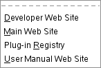

Figure 15.20.
The “GIMP online” submenu of the Help menu

The GIMP online command displays a submenu
which lists several helpful web sites that have to do with various
aspects of GIMP. You can click on one
of the menu items and your web browser will try to connect to the URL.